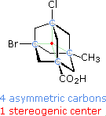
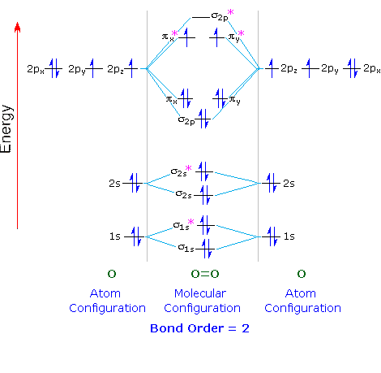
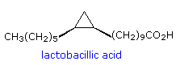
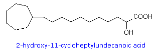
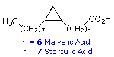
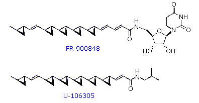
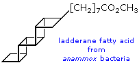
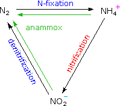

The asymmetric carbon concept has played an important role in the development of organic chemistry. Indeed, it provided the focus for the revolutionary structural theory introduced by Jacobus van't Hoff and Joseph A. Le Bel. However, in recent years the nuance of distinguishing between the purely structural definition of an asymmetric carbon and the operational definition of a stereogenic element (e.g. a chiral center) has become increasingly important.

For example, consider the tetrasubstituted adamantane molecule shown on the left. Although four asymmetric carbon atoms (colored light blue) are present in this compound, it exists in the form of only two stereoisomers (enantiomers) rather than the sixteen predicted by the 2n rule. There is, in fact, only one stereogenic center, shown by the red dot at the center of the molecule, and the configuration shown here is (R). The asymmetric carbon atoms are not stereogenic centers, because any two substituents on any of these bridgehead carbons cannot be exchanged without destroying the constitutional integrity of this rigid, highly bridged molecule.End of this supplementary topic |
|---|
Simple covalent bond models involving electron pair sharing have proven to be a valuable tool for describing the structures of simple molecules, such as methane, water, fluorene and nitrogen. However, this model fails to explain the paramagnetic nature of oxygen. The electrons in most non-metallic compounds are paired (opposite spins) in bonding and non-bonding orbitals, resulting in a zero spin diamagnetic molecule. However, oxygen has a net electron spin of 1, indicating there are two unpaired electrons having the same spin (1/2). One of the triumphs of molecular orbital theory has been its success in rationalizing this fact, as shown in the following correlation diagram.
Each oxygen atom contributes eight electrons to the molecule. Half of these occupy sigma bonding and antibonding orbitals, formed by overlap of 1s and 2s orbitals, that do not contribute to the final bonding picture. Of the remaining eight electrons, six occupy 2σ and 2π bonding orbitals in accord with the aufbau principle. This leaves two electrons which must be placed in the two 2π* antibonding orbitals. By Hund's Rule, these electrons will each occupy one of these degenerate (same energy) orbitals, and have identical spins. The resulting antibonding character cancels one of the three bonding interactions, leaving a total bond order of 2.

| Correlation diagrams for fluorine and nitrogen will be displayed above by clicking the appropriate button. | ||||
End of this supplementary topic |
|---|
A wide array of unusual fatty acids is found in seed oils and microorganisms such as bacteria. Among these are fatty acids containing cis-cyclopropane fatty acids (e.g. lactobacillic acid), omega-cycloalkyl fatty acids (e.g. 2-hydroxy-11-cycloheptylundecanoic acid) and cyclopropene fatty acids (e.g. malvalic and sterculic acid).
 |
 |  |
|---|

Two novel polycyclopropane fatty acid derivatives, FR-900848 and U-106305, were isolated from Streptoverticillium fervens by Japanese microbiologists in the early 1990's. Structural formulas for these remarkable compounds are drawn on the right. FR-900848 shows potent, selective activity against filamentous fungi such as Aspergillus niger, Mucor rouxianus, Aureobasidium pullulans, and various Trichophyton sp. U-106305 is an inhibitor of cholesteryl ester transfer protein (CETP).In the late 1980's microbiologists in the Netherlands discovered a remarkable red-colored bacterium that anaerobically oxidized ammonia to elemental nitrogen. Although a simple overall conversion can be written as:
| NH4+ + NO2– | N2 + 2H2O |
|---|

The nitrogen cycle converts elemental nitrogen into more usable forms (such as ammonia and nitrate ions) and back again, maintaining a global balance, as shown on the right. First, nitrogen gas is converted directly to ammonia by nitrogen-fixing microbes.

Plants and animals consume ammonia, and then release it when they die and decompose. The next step in the cycle is carried out by nitrifying bacteria and archaea, which transform ammonia to nitrites and nitrates. The cycle is completed as denitrifying microorganisms convert nitrates into nitrogen gas, replenishing the atmosphere. Anammox bacteria, such as Brocadia anammoxidans, Kuenenia stuttgartiensis and Scalindua sorokinii, take a short cut through the cycle, creating a path from ammonia and nitrite directly to nitrogen gas. Indeed, anammox bacteria in marine ecosystems actively contribute to biological nitrogen cycling, being responsible for at least 50% of total nitrogen production in the oceans.This page is the property of The Edvibe Team.
Comments, questions and errors should
be sent to contact@edvibe.co.ke.
These pages are provided to the IOCD to assist in capacity building in chemical education. 05/05/2013
End of this supplementary topic |
|---|